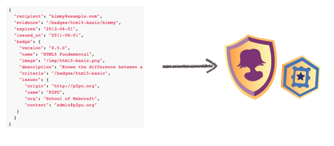
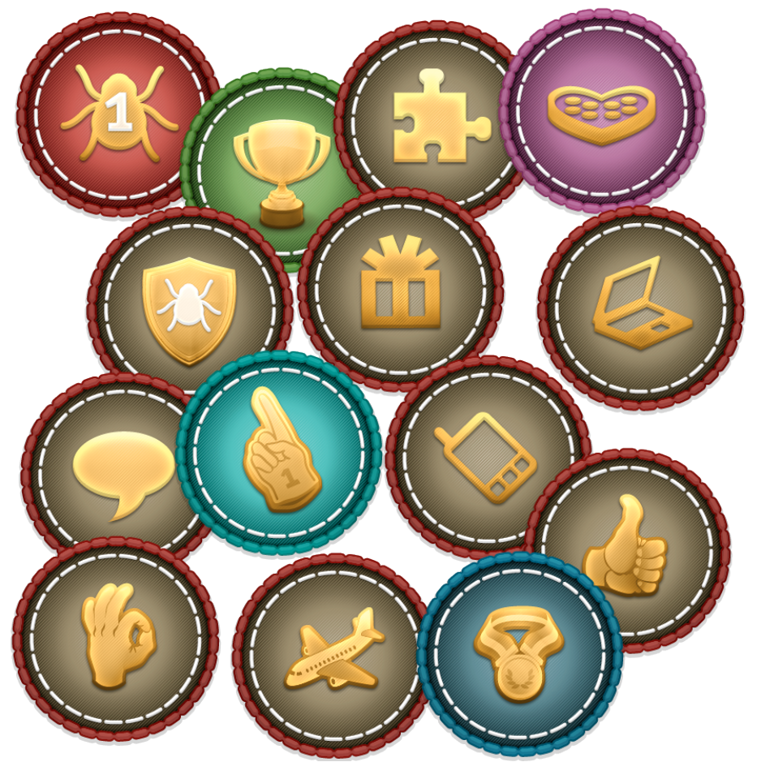
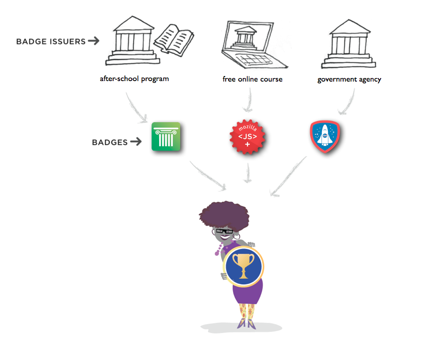
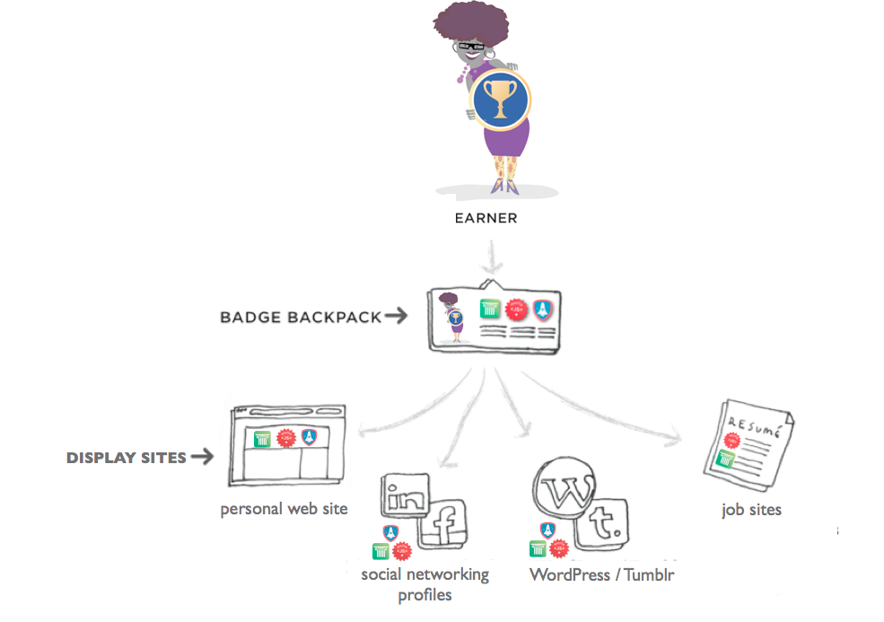
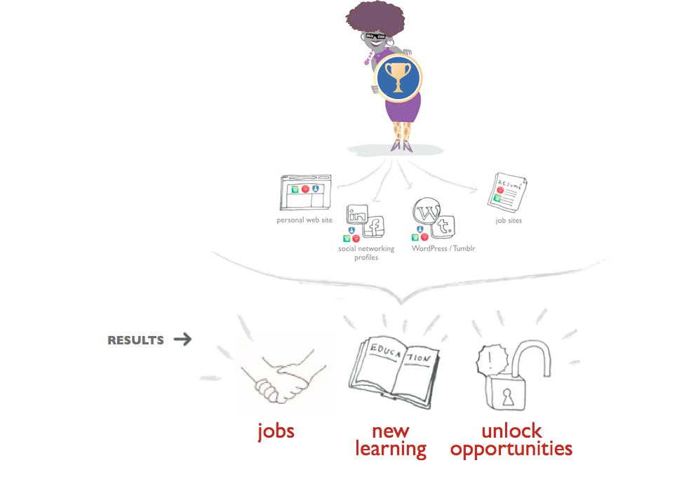
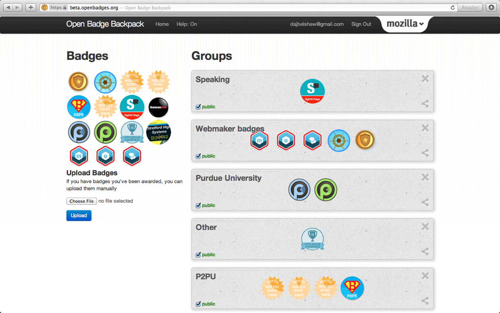
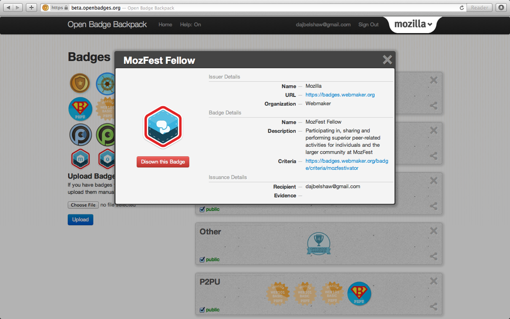

Dr. Doug Belshaw
Badges & Skills Lead
Mozilla Foundation
Twitter: @dajbelshaw
Email: doug@mozillafoundation.org
Mozilla - they make Firefox, right?
The Mozilla story
is a mission driven, non-profit organization.
Mozilla's mission is to promote openness, innovation and opportunity on the web.- The Mozilla Mission
An e-portfolio is a purposeful aggregation of digital items - ideas, evidence, reflections, feedback etc. which ‘presents’ a selected audience with evidence of a person's learning and/or ability.
(JISC website)
Leap2A
<------->
Open specification for transferring learner-owned information between different systems
Open specification for displaying learners’ achievements across the Web

Silos
What if we used badges for learning?
Not just digital badges but Open Badges?

Open Badges are images with metadata hard-coded into them
Visual representations of achievements, learning, skills, interests, competencies

They can represent hard & soft skills, peer assessment, and stackable lifelong learning
Open Badges?
(What about degrees, certificates, diplomas?)
Not simply either/or — both/and!




Doug's Open Badges backpack

Example of an Open Badge in a backpack
We are

Doing good is part of our code
Come to the Open Badges workshop!
Ask me hard questions!
- Now!
- Via email: doug@mozillafoundation.org
- Via twitter: @dajbelshaw (but not until January 2013!)